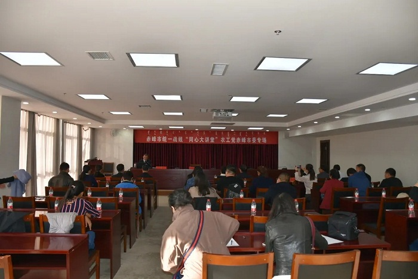
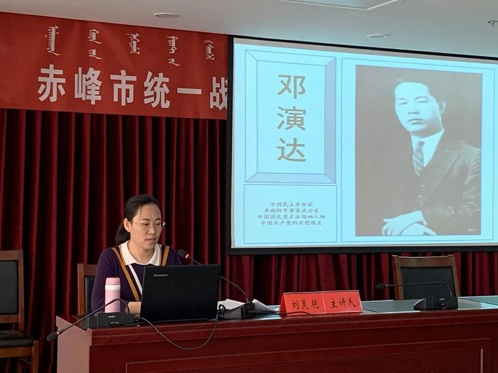
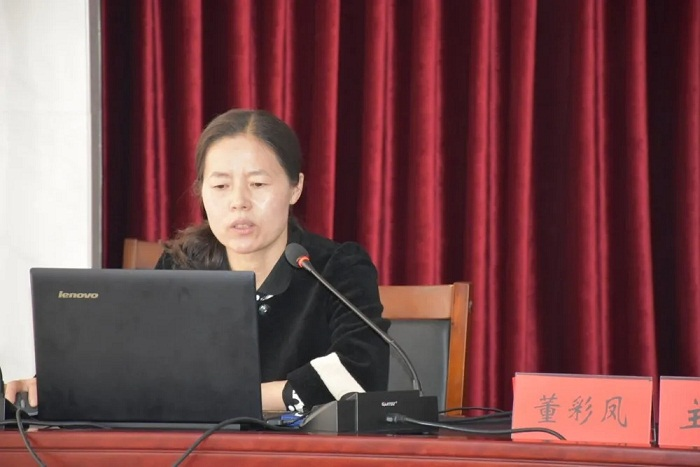
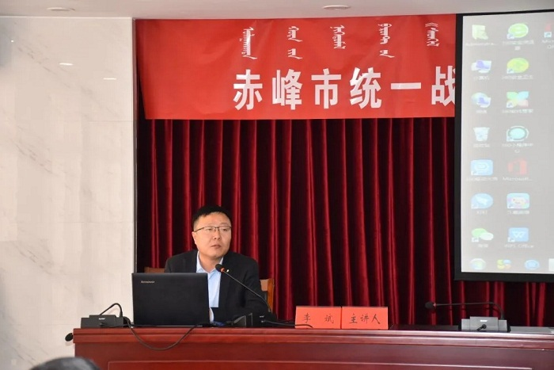
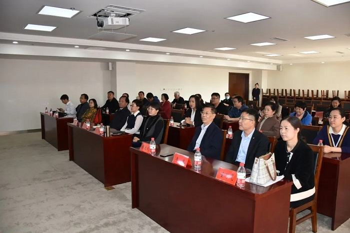

10月30日，赤峰统一战线第五期“同心大讲堂” 农工党赤峰市委专场开讲。农工党赤峰市委主委、市政府副市长李艳茹，市委统战部副部长张艳、九三学社市委主委、红山区人大副主任贾洪榛出席活动。本期“同心大讲堂”由三位农工党党员分别结合农工党党史、市委会重点工作、抗疫经历等进行讲述和分享。各民主党派成员共计60余人参加。会议由农工党党员张志勇主持。



农工党赤峰市委副秘书长、市政协社法委办公室主任刘灵艳围绕中国农工民主党的历史、农工党所做出的历史贡献，以及农工党赤峰市委近年来所开展的重点工作进行分享。重点介绍了农工党主要创始人邓演达为国为民，奋战终身，为中国民主革命作出了不可磨灭的贡献；农工党在中国革命、建设、改革的各个历史时期与中国共产党风雨同舟、患难与共，为实现民族独立、人民解放和国家富强、人民幸福生活而奋斗的光辉历程，以及为统一战线和中国共产党领导的多党合作事业发展做出的重要贡献。详细介绍了农工党赤峰市委员会围绕“健康中国和美丽中国”两条主线，在参政议政、自身建设、社会服务、打赢疫情防控阻击战等方面开展的重点工作。
“全国抗击新冠肺炎疫情先进个人”、内蒙古首批援鄂医疗队成员、赤峰学院附属医院呼吸与危重症医学科护士长董彩凤深情讲述了她舍命奋战在湖北钟祥医院60余天的抗疫经历。现场观众感动落泪。农工党赤峰市委社会服务部副部长、赤峰市九耕医疗器械有限公司总经理李斌分享为疫情防控奉献爱心的经历，体现了大爱精神和家国情怀。

参加活动的民主党派成员一致表示，此次大讲堂活动主题鲜明、内容丰富，具有很强的感染力，听后很受震撼、倍受鼓舞。一致表示将在工作和学习中以实际行动弘扬“不忘合作初心，继续携手前进”的优良传统，团结奋斗、齐心协力，更加履职尽责，提高参政议政水平，为全市经济社会平稳健康发展作出民主党派成员应有的贡献。